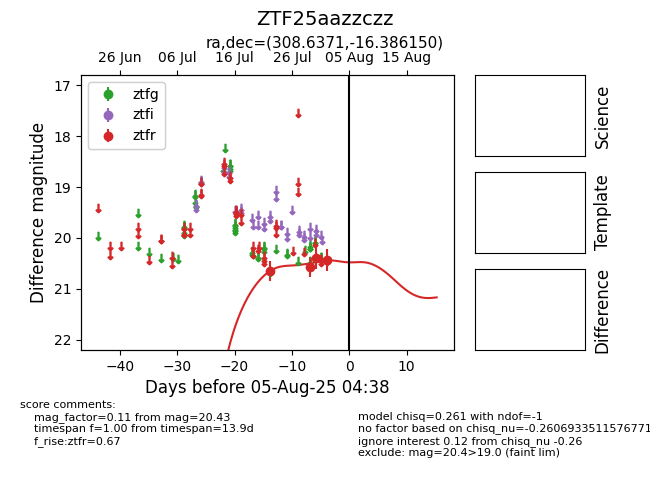

Target ZTF25aazzczz at 2025-08-05 04:38, see:
FINK: fink-portal.org/ZTF25aazzczz
Lasair: lasair-ztf.lsst.ac.uk/objects/ZTF25aazzczz
ALeRCE: alerce.online/object/ZTF25aazzczz
alt names
ZTF25aazzczz (ztf,fink)
coordinates:
equatorial (ra, dec) = (308.6371,-16.38615)
galactic (l, b) = (28.9042,-29.99693)
photometry
last ztfr=20.43
4 ztfr detections
